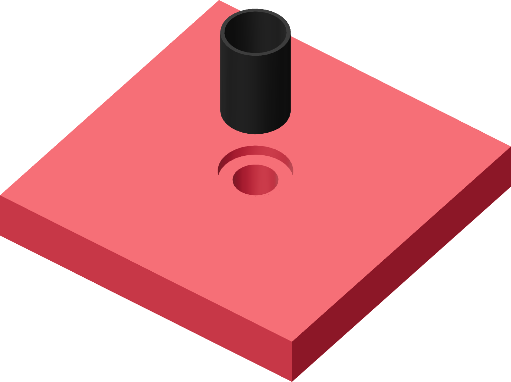

G supports the annular cap
The shallow recess locates the seal's cap while leaving its entire cylindrical wall accessible to your fingers.

- Clear the puck's through-hole and shallow recess of print remnants.
- Set it recess-up on the bench. It receives the fresh thimble cap-down during sleeve fitting.
- Keep the puck loose. It is a bench support, not a piece that enters the donor with the tube.
Finished when
The recess is clean and the through-hole is open.